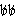

|
Accompanying material
General
policy
CD-ROMs,
sound discs, computer disks
Audio & video cassettes
Microfiche
Maps
Serials with accomp. materials
Catalog
record
Item record
|
Recording accompanying material in the catalog record
When cataloging accompanying material in another format, use the options
of 1.5E in this order of preference:
- Record the name of the accompanying material following "+" in subfield
e of the 300 field (1.5E1d)
300  212 p.
: ‡bill. ; ‡c 25 cm. + ‡e1 computer disk (3 1/2 in.)
- A system requirement note should be added if the information
is readily available.
300 185 p. : ‡bill.
; ‡c 25 cm. + ‡e1 computer optical disc (4 3/4 in.)
Changed from computer laser optical disc [April, 1999]
- A system requirement note should be added if the information
is readily available.
300 iv, 299 p.
:‡bill. ;‡c19 cm. +‡e2 microfiches.
300 285 p. :‡bill.
;‡c 27 cm. + ‡e1 sound disc (56 min. : digital, stereo. ; 4 3/4 in.)
300 257 p. :‡bill.
;‡29 cm. + ‡e1 sound disc (25 min. : analog, 33 1/3 rpm, mono. ; 12
in.)
300 x, 228 p. :‡bill.,
ports. ;‡c28 cm. +‡e1 cassette (analog)
- Record the details of the accompanying material in a 500 note
(1.5E1c).
Use this when more detail is needed or when the
accompanying material relates to one item of a bookset or serial
(1.5E1c).
500 Accompanied
by cassette with title: Sounds of spring in the desert.
500 Vol. 9 accompanied
by computer disk.
500 Issue for
Sept. 1987 accompanied by 8 transparencies. [serial]
- Make a separate catalog record.
Use this option when the items are issued separately
or in the rare instances when a full record for the accompanying material
is required.
Relate the records using an informal 500 note (or a 590
note if the items were not issued separately) and make related
work added entries as necessary.
Please consult team leader before using this option.
|